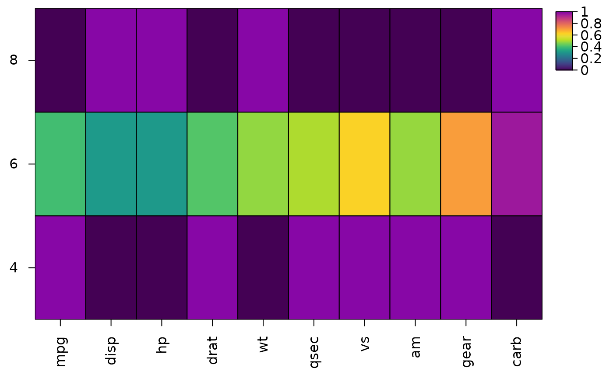
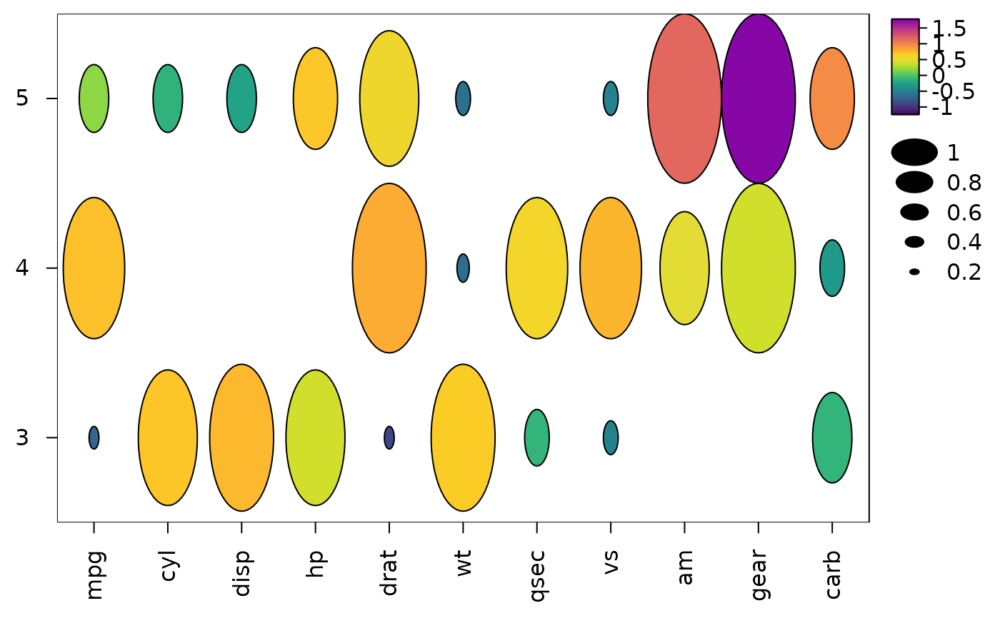
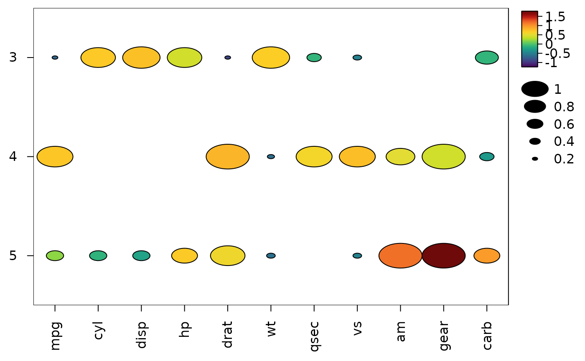
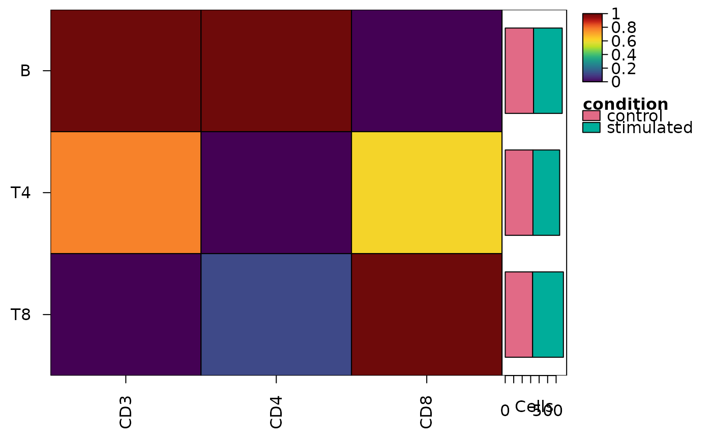

Summarise groups of rows or columns for a heatmap
Source:R/heat_map_summarise.R
heat_map_summarise.Rdheat_map_summarise() reduces the columns (and/or rows) of a matrix
or data.frame to one per group, for heatmaps of group summaries such as the
mean expression of each gene in each cell type (a pseudobulk view of
single-cell data) or the median intensity of each marker in each cluster
of cytometry events. Summaries computed with different functions can be
combined in heat_map(), e.g. the mean as the colour and the
proportion of cells expressing each gene (fun = "detected") as the
cell size of a dot plot.
Usage
heat_map_summarise(
x,
group_x = NULL,
group_y = NULL,
fun = "mean",
threshold = 0,
features = NULL,
assay = NULL,
group_by = NULL,
transform = NULL,
cofactor = 5,
scale = FALSE,
q = 0.01,
scale_when = "last",
stack_by = NULL,
bimodal = FALSE
)Arguments
- x
a matrix or data.frame, or single-cell data (a
SingleCellExperimentorSummarizedExperiment, aSeuratobject, aflowFrameorflowSet, or a sparse matrix with one cell per row; seeheat_map). Only numeric columns are summarised; other columns are dropped with a message. Single-cell data are summarised with one row per group of cells and one column per feature. The mean, sum, number, proportion detected and median of sparse data are found from the non-zero values, without a dense copy, and equal those of the dense data. Assays held on disk (DelayedArray, HDF5Array and BPCells matrices) are summarised a block of features at a time, with the same results.- group_x
a vector assigning each column of
xto a group, in the order of the columns ofx(or named by column name). Each group becomes one column of the result. Columns in a missing group are dropped.- group_y
a vector assigning each row of
xto a group, in the order of the rows ofx(or named by row name). Each group becomes one row of the result. Rows in a missing group are dropped.- fun
the summary of the values in each group, one of
"mean"(default),"median","sum","min","max","sd","n"(the number of non-missing values),"detected"(the proportion of non-missing values abovethreshold) or"dip"(the dip statistic of the values abovethreshold: seebimodal), or a function taking a numeric vector and returning a single number. Missing values are removed before summarising."values"keeps the values themselves: the result is then a matrix of lists holding the numeric vector of values in each group, forcell_valuesinheat_map()to draw their distributions inside the cells.- threshold
values above
thresholdare counted byfun = "detected", and the dips offun = "dip"andbimodalare found from them, set to 0 by default.- features
the features of single-cell data to summarise, as names (or indices); see
heat_map. Set toNULLby default for every feature.- assay
the values of single-cell data to summarise; see
heat_map.- group_by
the group of each cell of single-cell data: the name of a column of the cells' metadata, or a vector with the group of each cell (as
group_y); seeheat_map. Each group becomes one row of the result. Several column names (or a data.frame or list of several variables, with one value per cell) group the cells by their combinations, e.g.c("cluster", "sample")for the medians of each cluster in each sample, in rows named"cluster / sample"and ordered by cluster, then sample.- transform
"asinh"to transform the values of the cells with the inverse hyperbolic sine of each value divided bycofactorbefore summarising them (the usual transform of cytometry intensities), orNULL(default) to summarise the values as they are. The zeros of sparse data stay zeros, so they are transformed without a dense copy.- cofactor
the cofactor of
transform = "asinh": one number (5 by default, as for mass cytometry; about 150 is common for flow cytometry) or one per feature, named by feature.- scale
the scaling of each feature (column):
FALSE(default) for none, or a method ofheat_map_scale:"quantile"(0 to 1 between theqand1 - qquantiles, with the values beyond them clipped),"range","zscore"or"mean".- q
the quantile of
scale = "quantile", set to 0.01 by default.- scale_when
"last"(default) to scale the summaries of the groups, or"first"to scale the cells before summarising them. Scaling sparse data first reads the chosen features as a dense matrix.- stack_by
the part of each cell for stacked bars beside the summaries (e.g. its condition or sample): the name of a column of the cells' metadata, or a vector with the part of each cell. The number of cells of each group in each part is kept in the
"stack"attribute of the result, whichheat_map(bar_values_y = "n", bar_type_y = "stack")draws. Needsgroup_by.- bimodal
TRUEto keep the dip of each feature in each group of rows (cells) as the"dip"attribute of the result, and the number of values it was found from as"dip_n", forheat_map(bimodal = TRUE)to outline the groups in which a feature looks like two populations; set toFALSEby default. The dip of Hartigan and Hartigan (1985) is the largest distance between the distribution of the values and the closest unimodal distribution: 0 for one peak of any shape, and up to 0.25 as the values split into separate populations (about 0.02 for two equal populations 3 standard deviations apart, 0.05 for 4). So that the measurement and its transformation don't make peaks of their own, the dip is found from the values abovethreshold(the cells in which a feature is detected, which leaves out piles of zeros and the lower of the two mirrored peaks the asinh transform with a small cofactor makes of a negative population), aftertransformand before scaling (quantile scaling clips values into piles), with discrete values such as counts spread evenly over the gaps between them (so that the comb of 1, 2, 3, ... counts isn't read as several peaks) and, for continuous values, the piles at the lowest and highest values (clipping, saturated detectors) left out. Groups with fewer than 20 such values have no dip. The dips are computed in compiled code, from the greatest convex minorant and least concave majorant of the distribution of the values (Hartigan and Hartigan 1985), and equal those of the diptest package.Populations that differ in several features at once (most often whether the features are detected at all, as in a cluster combining CD4 and CD8 T cells: on the count scale, a feature detected in only some cells falls away steadily from zero, as dropout does, and has one peak) are found across features: the dip of the scores of each group's cells on the first principal component of the correlations of its features (those that vary and are detected in at least 5% of the cells, at least 3 of them; at most 50,000 cells of a group, drawn with a fixed seed). It is only found when that component carries co-variation - an eigenvalue of at least 2, and above the largest eigenvalue of as many independent features (the upper edge of the Marchenko-Pastur law, Marchenko and Pastur 1967) - so that features that each have two peaks of their own (e.g. from the asinh transform) don't add up to a split, and it is kept as the
"dip_pc"attribute (and"dip_pc_n", the cells used) in the features that drive the component (more than an equal share of it),NAelsewhere. Needs groups of rows fromgroup_byorgroup_y.
Value
a numeric matrix with one column per group of group_x (or
the columns of x) and one row per group of group_y (or the
rows of x), or a matrix of lists for fun = "values".
Groups are in the order of their factor levels (sorted for other
vectors). Groups without any values are NA. Summaries of groups
from group_by keep three attributes, which heat_map()
reads: "n", the number of cells in each group (for
bar_values_y = "n"); "stack" with stack_by, a
matrix with the number of cells of each group (row) in each part
(column); and "groups", a data.frame with one row per group
holding the grouping columns and the other metadata that is the same for
every cell of the group (e.g. the condition of each sample), which
heat_map(group_by = , annotation_by = ) can use as the metadata
of the rows. With bimodal = TRUE the result also keeps the
"dip", "dip_n", "dip_pc" and "dip_pc_n"
attributes (see bimodal).
References
Hartigan, J. A. and Hartigan, P. M. (1985). The dip test of unimodality. The Annals of Statistics, 13(1), 70-84. doi:10.1214/aos/1176346577
Marchenko, V. A. and Pastur, L. A. (1967). Distribution of eigenvalues for some sets of random matrices. Mathematics of the USSR-Sbornik, 1(4), 457-483. doi:10.1070/SM1967v001n04ABEH001994
Examples
# Mean of each variable for each number of cylinders
cyl <- heat_map_summarise(mtcars[, -2], group_y = mtcars$cyl)
heat_map(cyl, scale = "column", popup = FALSE)
#> Applying range scaling to each column...

# Distribution of each variable for each number of cylinders in its cell
heat_map(
cyl,
scale = "column",
cell_values = heat_map_summarise(mtcars[, -2], group_y = mtcars$cyl,
fun = "values"),
popup = FALSE
)
#> Applying range scaling to each column...

# Dot plot - mean as colour, proportion above the overall mean as size
z <- scale(mtcars)
heat_map(
heat_map_summarise(z, group_y = mtcars$gear),
cell_size = heat_map_summarise(z, group_y = mtcars$gear, fun = "detected"),
cell_shape = "circle",
popup = FALSE
)

# Single cells - the median of each marker in each cluster
cells <- data.frame(
CD3 = c(rnorm(200, 4), rnorm(30, 1)),
CD19 = c(rnorm(200, 1), rnorm(30, 4)),
cluster = rep(c("T cells", "B cells"), c(200, 30))
)
heat_map_summarise(cells, group_by = "cluster", fun = "median")
#> CD3 CD19
#> B cells 1.129893 3.9460525
#> T cells 4.083076 0.9576054
#> attr(,"n")
#> B cells T cells
#> 30 200
#> attr(,"groups")
#> cluster
#> B cells B cells
#> T cells T cells
# Cytometry - medians of asinh-transformed intensities, scaled to 0-1
# between the 1st and 99th percentiles of each marker, with the number of
# cells of each condition in each cluster as stacked bars
events <- data.frame(
CD3 = rexp(2000, 1 / 300),
CD4 = rexp(2000, 1 / 100),
CD8 = rexp(2000, 1 / 50),
cluster = sample(c("T4", "T8", "B"), 2000, replace = TRUE),
condition = sample(c("control", "stimulated"), 2000, replace = TRUE)
)
medians <- heat_map_summarise(
events,
group_by = "cluster",
fun = "median",
transform = "asinh",
cofactor = 5,
scale = "quantile",
stack_by = "condition"
)
#> Applying the asinh transform (cofactor 5)...
#> Applying quantile scaling to each column...
heat_map(medians, bar_values_y = "n", bar_type_y = "stack", popup = FALSE)
